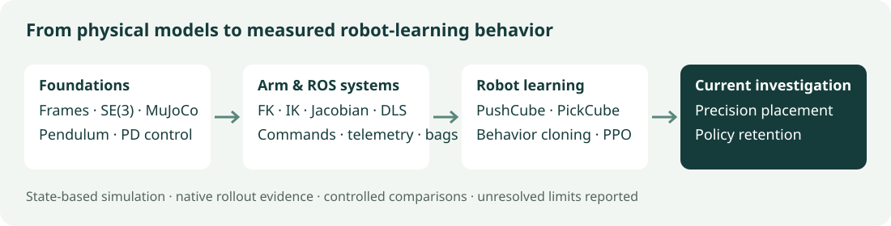

Physics & control
Configuration space, frames and SE(3); a one-joint MuJoCo loop, PD gain comparisons, and kick recovery.
Explore foundations ↗Robotics labs · state-based simulation
Build the physics and control loop. Learn a policy. Measure whether it can place an object—and keep it there.
MuJoCo and ROS systems labs lead into ManiSkill experiments with behavior cloning, PPO, and policy retention. Protocols, failures, and native rollouts stay visible.
Current research question
The teacher loss helps. Increasing its strength is a tradeoff, not a universal fix.
50 fresh paired resets per condition; 262,144 transitions per learner. Final success is the primary metric.
λ25 improves seed 2042 but fails the predeclared criterion. Keep λ10 as the reference.
The same reset list is shared across three training seeds; these are not 150 independent reset trials. The two studies use different test lists. Validation selects checkpoints separately; final-test outcomes never select them.
Could not load the summary. The complete report and source evidence remain available through the links above.
BC-initialized PPO can improve complete autonomous PickCube behavior. Frozen-teacher supervision substantially reduces regression under the tested recipe.
Reliable precision retention across seeds, longer budgets, different teachers and reset distributions. Vision policies, hardware, and sim-to-real transfer are not established.
Inspect the evidence
Native simulator videos, measured outcomes, protocols and limitations. Historical results retain their original conditions and caveats.
12 reports · newest first
Loading report index… Open the latest report directly.
The project path
The roadmap advances through explainable artifacts. Implemented exercises do not certify an oral competency gate.

Configuration space, frames and SE(3); a one-joint MuJoCo loop, PD gain comparisons, and kick recovery.
Explore foundations ↗A two-link FK/IK/Jacobian lab, damped least squares, torque-limited physics, and live ROS telemetry, commands and replay.
Explore the systems lab ↗PushCube and PickCube; demonstrations, PPO failures, critic diagnostics, teacher anchoring and controlled strength ablations.
Read the experiment ledger ↗Related project · active research
Explore a separate project connecting simulated demonstrations, vision-language-action fine-tuning, reinforcement learning and planned hardware evaluation.
Explore the SO-101 project ↗Code, provenance & reproduction
Core Python/MuJoCo, ROS Jazzy in Ubuntu, and ManiSkill's Python 3.11 environment are separate. CI verifies contracts and saved evidence; it does not repeat all full training runs.